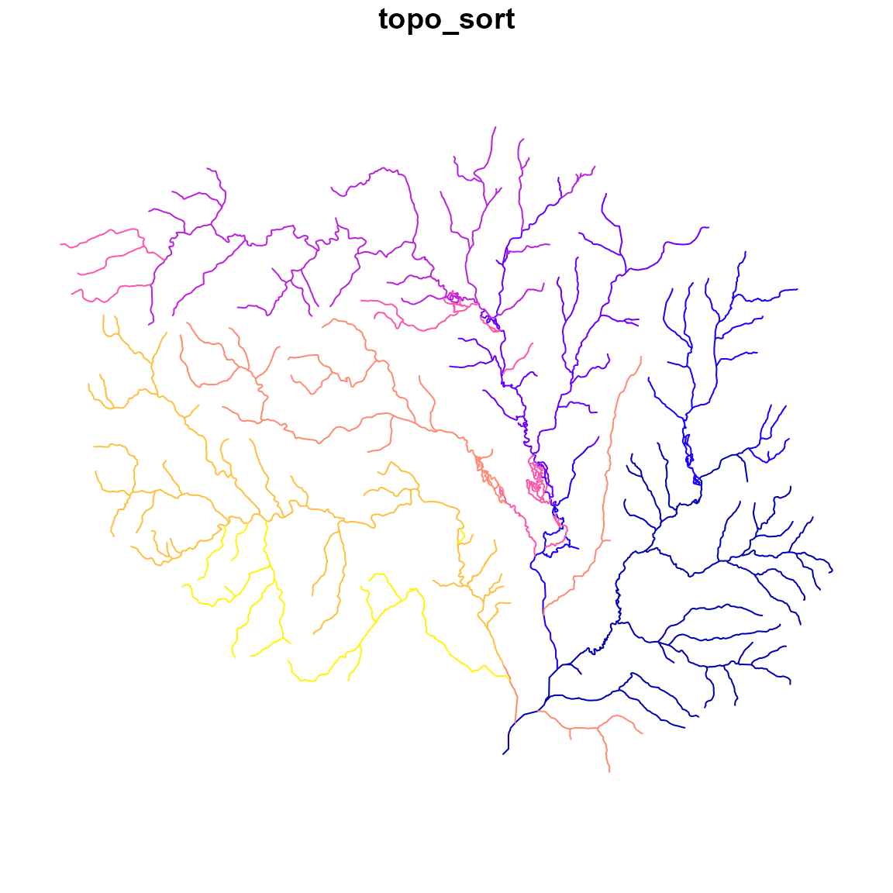

Terminology
The terms used below are derived from concepts of graph theory, the HY_Features data model, and the NHDPlus data model. Many of the concepts here are also presented in: Mainstems: A logical data model implementing mainstem and drainage basin feature types based on WaterML2 Part 3: HY Features concepts.
Introduction
The NHDPlus data model, which the attributes described here are based
on, includes many ‘value added attributes’ (VAA). This vignette
discusses a core set of VAA’s that hydroloom can create
from readily available hydrographic inputs. The vignette begins with a
background needed to understand what these attributes are, and then
demonstrates how to create them based on some sample input data. These
attributes are documented in the NHDPlus
manual, and every effort has been made to faithfully implement their
meaning.
While the hydroloom package contains other functions to
generate network attributes, (e.g. add_pfafstetter() for
Pfafstetter codes and add_streamorder() for stream orders)
this vignette focuses on the network attributes from the NHDPlus data
model that revolve around the topo_sort and
levelpath. In the NHDPlus data model,
topo_sort is referred to as
hydrosequence but it is functionally equivalent to a
topological sort and is referred to as topo_sort in
hydroloom.
Representing Network Topology
A network of flowlines can be represented as an edge-to-edge (e.g. edge list) or edge-node topology. An edge list only expresses the connectivity between edges (flowlines in the context of rivers), requiring nodes (confluences in the context of rivers) to be inferred.
#> ID toID fromnode tonode
#> 1 3 N1 N3
#> 2 3 N2 N3
#> 3 NA N3 N4In an edge-node topology, edges are directed to nodes which are then directed to other edges. An edge-to-edge toplogy does not include intervening nodes.
The “toID” of a terminal flowline can be either NA or, by convention,
0 or ““. Using 0 or an empty string is preferred within
hydroloom but both are handled in most cases. Further, as
long as 0 is not in the set of IDs, there is little practical
difference.
In hydroloom, edge-to-edge topology is referred to with
“id and toid” attributes.
topo_sort
Smaller ‘topo_sort’ values are guaranteed to be downstream of larger values along connected paths.
The NHDPlus data model includes an attribute called
hydrosequence that is functionally a topological
sort of the flowline network. It provides an integer identifier
guaranteed to decrease in the downstream direction. For flowlines that
are not connected by a single direction navigation (e.g. parallel
tributaries) the topo_sort has no significance. However, when two
flowlines have a direct navigation, the downstream flowline will always
have the smaller topo_sort. hydroloom supports creation of
topo_sort with the sort_network() function.
It is hard to overstate the importance of topo_sort, as any
function that requires understanding upstream-downstream relationships
requires a sorted version of the flowline network. In the NHDPlus data
model, a dendritic edge-list topology is stored in the form of a
topo_sort and ‘down topo_sort’ attribute. The equivalent is available in
hydroloom, but does not use the to topo_sort convention,
preferring the primary identifier (id) and an accompanying toid to store
a dendritic edge list.
Level Path
Levelpath values are constant along mainstem paths and are derived from the topo_sort of their outlet flowline.
A level path is derived from “stream level” which assigns an integer value to mainstem rivers from outlet up the network (see NHDPlus documentation for more). Rivers terminating to the ocean are given level 1 and this level extends all the way to the headwaters. Rivers terminating in level 1 rivers are given level 2, and so on.
“Stream leveling” is the process of establishing uniquely identified
“level paths” through a stream network. This is accomplished with a set
of rules that determine which tributary should be considered dominant at
every confluence to establish the “mainstem rivers” for each “drainage
basin” in a network. hydroloom supports creation of stream
level with the add_streamlevel() function, and the creation
of level path with add_levelpaths(). hydroloom
adopts the convention used in NHDPlus, to assign the levelpath as the
topo_sort of the path’s outlet.
See Mainstems: A logical data model implementing mainstem and drainage basin feature types based on WaterML2 Part 3: HY Features concepts for an in depth discussion of these concepts.
Other Derived Network Attributes
A number of additional attributes can be derived once
levelpath and topo_sort are established. These
include: (note that precise attribute names have not been used here)
- terminal path: the identifier (topo_sort or primary id) of the terminal flowline of network.
- up topological sort: the identifier of the upstream flowline on the mainstem
- down topological sort: the identifier of the downstream flowline on the mainstem
- up level path: the identifier of the next upstream levelpath on the mainstem
- down level path: the identifier of the next downstream levelpath on the mainstem
- path length: The distance to the network outlet downstream along the main path.
- total drainage area: Total accumulated area from upstream flowline’s catchment area.
- arbolate sum: The total accumulated length of upstream flowlines.
- terminal flag: A simple 0 or 1 indicating whether a flowline is a terminal path or not.
Required Base Attributes
Creating levelpath and topo_sort identifiers requires a set of base attributes that include:
fromnode/tonodeorid/toid: from and to nodes can be used to generate an edge to edge flowline topology.length: a length is required for each flowline in the network to determine a flow distance, and if using the arbolate sum for stream leveling.area: the local drainage area of each flowline is useful in many contexts but is primarily used to calculate total drainage area.weight_attribute: a weight metric is required for stream leveling to determine the dominant upstream flowline. In the NHD, the arbolate sum is used. However, alternative metrics (e.g. total drainage area) can be used instead.name_attribute: Many times, it is preferable to follow a consistently named path rather than a strict physical weight when stream leveling. In these cases aname_attributecan be provided.divergence: in order to create a [many:1] upstream to downstream topology, diverted paths must be labeled as such. This attribute is 0 for normal (already [many:1]) connections, 1 for the main path through a divergence, and 2 for any diverted path.
A visual introduction to the advanced network attributes
To illustrate the above concepts and attributes, we’ll start with the
“New Hope” demo data included in the hydroloom package and
add a toid attribute based on the edge-node topology included in the
data.
# Import data
x <- hy(sf::read_sf(system.file("extdata/new_hope.gpkg", package = "hydroloom")))
# Strip the data back to the required base attributes
fpath <- hydroloom::add_toids(
dplyr::select(x, id, fromnode, tonode, divergence, feature_type,
da_sqkm, length_km, GNIS_ID)
)
# Print
head(fpath <- select(sf::st_cast(fpath, "LINESTRING"),
-tonode, -fromnode, -divergence, -feature_type))
#> Simple feature collection with 6 features and 5 fields
#> Geometry type: LINESTRING
#> Dimension: XY
#> Bounding box: xmin: 1517192 ymin: 1555954 xmax: 1518819 ymax: 1557990
#> CRS: unknown
#> # A tibble: 6 × 6
#> id toid da_sqkm length_km GNIS_ID geom
#> <int> <dbl> <dbl> <dbl> <chr> <LINESTRING [m]>
#> 1 8893864 8894334 4.81 3.24 991288 (1518702 1557298, 1518643 1557297, …
#> 2 8894490 8894336 0 0.002 991288 (1517194 1556000, 1517192 1555999)
#> 3 8894494 8894490 0.009 0.102 991288 (1517288 1556038, 1517252 1556023, …
#> 4 8894334 8894492 0.428 0.073 991288 (1517349 1556090, 1517341 1556077, …
#> 5 8894492 8894494 0.0018 0.008 991288 (1517295 1556041, 1517288 1556038)
#> 6 8893850 8893864 0.406 0.954 991288 (1518668 1557990, 1518699 1557904, …topo_sort and terminal ID
After removing attributes used to generate the toid
attribute, we have a id and toid relation
representing the connectivity of the network as well as attributes
required to generate a sorted network with
sort_network()
head(fpath <- sort_network(fpath, split = TRUE))
#> Simple feature collection with 6 features and 6 fields
#> Geometry type: LINESTRING
#> Dimension: XY
#> Bounding box: xmin: 1505349 ymin: 1554873 xmax: 1508920 ymax: 1558708
#> CRS: unknown
#> # A tibble: 6 × 7
#> id toid da_sqkm length_km GNIS_ID terminal_id geom
#> <int> <dbl> <dbl> <dbl> <chr> <int> <LINESTRING [m]>
#> 1 8898302 8.90e6 0.152 0.182 "98382… 8897784 (1505349 1555718, 150545…
#> 2 8896658 8.90e6 1.19 1.37 "98382… 8897784 (1505455 1555570, 150547…
#> 3 8896656 8.90e6 3.86 2.64 "98382… 8897784 (1506375 1554873, 150644…
#> 4 8896664 8.90e6 1.38 1.64 " " 8897784 (1507786 1554903, 150781…
#> 5 8896624 8.90e6 1.34 1.17 "98382… 8897784 (1508236 1556343, 150825…
#> 6 8896572 8.90e6 1.56 1.77 " " 8897784 (1508311 1558708, 150835…The sort_network() function sorts the flowlines such
that headwaters come first and the terminal flowline last. Additionally,
it produces a terminal_id representing the outlet
id of the network. If multiple terminal networks had been
provided, the terminal_id would allow us to group the data
by complete sub networks (a convenient parallelization scheme).
In contrast to NHDPlus, where the terminal path is identified by the
topo_sort id of the outlet flowline (meaning
the outlet of a level path is left to a user to generate),
hydroloom uses the more stable primary id
(COMID in NHDPlus) for identifying outlets to allow the topo_sort
attribute to be generated and discarded as needed.
We can visualize this sorting by assigning a temporary “topo_sort” value to the sorted network, row wise. Here, we assign the first rows in the sorted set to large values and the last rows to small values in line with the topo_sort order convention in NHDPlus.

Level Path and outlet ID
To generate a levelpath attribute, a “physical” weight is needed to
determine the upstream mainstem at confluences. For this example, we’ll
follow the NHD convention and calculate the arbolate sum explicitly. The
add_levelpaths() function will add arbolate sum internally
if no weight is explicitly defined.
# Rename and compute weight
fpath$arbolatesum <- accumulate_downstream(
dplyr::select(fpath,
id, toid, length_km), "length_km")
plot(sf::st_geometry(fpath), lwd = fpath$arbolatesum / 10)A name_attribute identifier can also be provided to
override the physical weight_attribute when a “smaller”
river has the same name. There is an optional
override_factor parameter that signifies if the physical
weight is override_factor times (e.g. 5) larger on an
unnamed or differently named upstream path, the physical weight will be
used in favor of the named id.
# Get levelpaths
fpath <- add_levelpaths(fpath, name_attribute = "GNIS_ID",weight_attribute = "arbolatesum",
status = FALSE, override_factor = 5)
# Print
head(fpath)
#> Simple feature collection with 6 features and 10 fields
#> Geometry type: LINESTRING
#> Dimension: XY
#> Bounding box: xmin: 1514059 ymin: 1551922 xmax: 1518746 ymax: 1554515
#> CRS: unknown
#> # A tibble: 6 × 11
#> id toid levelpath_outlet_id topo_sort levelpath
#> <int> <dbl> <int> <int> <dbl>
#> 1 8897784 0 8897784 1 1
#> 2 8894360 8897784 8897784 2 1
#> 3 8894356 8894360 8897784 3 1
#> 4 8894354 8894356 8897784 4 1
#> 5 8894350 8894354 8894350 5 5
#> 6 8893884 8894350 8894350 6 5
#> # ℹ 6 more variables: geom <LINESTRING [m]>, da_sqkm <dbl>, length_km <dbl>,
#> # GNIS_ID <chr>, terminal_id <int>, arbolatesum <dbl>
plot(fpath["topo_sort"], key.pos = NULL, reset = FALSE)
plot(fpath["levelpath"], key.pos = NULL)
Finally, let’s visualize these advanced VAAs!
In the below animation, each newly added level path is shown in blue,
with the outlet flowline colored in red. Remembering that
sort_network() sorts flowlines such that headwaters come
first and the terminal flowlines last we invert the network so that
level paths fill in from outlet to head waters. For clarity, only
levelpaths with more than 2 flowlines are shown.
# Invert plotting order
fpath <- dplyr::arrange(fpath, topo_sort)
# Level Paths with more then 2 flowlines
lp <- dplyr::group_by(fpath, levelpath) %>%
dplyr::filter(n() > 2)
# Unique Level Path ID
lp <- unique(lp$levelpath)
# Terminal flowline
terminal_fpath <- dplyr::filter(fpath, id %in% terminal_id)
gif_file <- "levelpath.gif"
gifski::save_gif({
for(i in 1:length(lp)) {
lp_plot <- dplyr::filter(fpath, levelpath == lp[i])
outlet_plot <- dplyr::filter(lp_plot, id %in% terminal_id)
plot(sf::st_geometry(fpath), lwd = 0.5, col = "grey")
plot(sf::st_geometry(terminal_fpath), lwd = 3, col = "red", add = TRUE)
plot(sf::st_geometry(dplyr::filter(fpath, levelpath %in% lp[1:i])), add = TRUE)
plot(sf::st_geometry(lp_plot), col = "blue", add = TRUE)
plot(sf::st_geometry(outlet_plot), col = "red", lwd = 1.5, add = TRUE)
}
}, gif_file, delay = 0.5)
#> [1] "C:\\Users\\dblodgett\\active_code\\hydroloom\\vignettes\\levelpath.gif"
knitr::include_graphics(gif_file)Summary
This entire process of sorting the network and building topo_sort,
levelpath, and derivative variables is wrapped in the nhdplusTools add_plus_network_attributes
function to provide performance and simplicity. It supports
paralellization and will print status updates in the case when the input
network is very large. add_plus_network_attributes returns
NHDPlus attribute names (truncated per shapefile rules as is done in the
NHDPlus database).
The attributes described in this vignette assume that diversions in
the network have zero flow such that diversions are treated as if they
were headwaters. See the vignette("non-dendritic") for
information about attributes that include connected divergences.